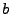
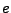
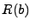

In these two formulations,  and are not equivalent, and there is no relationship between the covariance matrices and .
Although  and are also not equivalent, the covariance matrices  and are related as follows,